--------- Informacje ---------
---26.06.2024--------
Aktualizacja strony -
rezygnacja z php.
---17.04.2017--------
Zmiana serwera i adresu.
---17.04.2015--------
Wielka rozbudowa strony.
---13.07.2009--------
Zmiana wyglądu strony - optymalizacja.
---06.02.2004--------
Zalążek strony.
Projekt Tytus Romek i A'Tomek
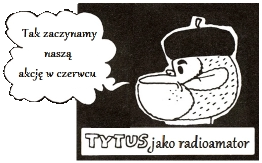Od 07 Czerwca do 30 2015 przeprowadziliśmy z kolegami Krótkofalowcami nasza nową akcję pod tytułem "Tytus Romek i A'Tomek".
Romek i A'Tomek mają już licencję radioamatorską, za to Tytus jako wieloletni nasłuchowiec stara się nabrać odpowiednich nawyków krótkofalarskich. Romek i A'Tomek z całych sił mu pomagają, nawet Profesor Talent i Papcio Chmiel robią co w ich mocy. Czy mu się uda, czy zrobi upragnione łączności i co najważniejsze uczłowieczy się?
- Taką by nam pewnie ułożył historyjkę Henryk Chmielewski gdyby miał więcej sił i zdrowia. My za to mogliśmy zorganizować małą akcję "krótkofalarsko-dyplomową" połączoną z szeregiem stacji okolicznościowych, do której zapraszaliśmy nadawców i nasłuchowców.
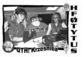
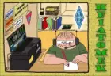
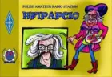
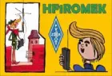
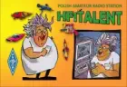 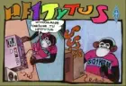 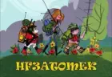 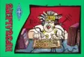
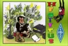 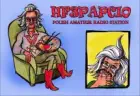 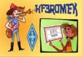 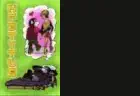
{kind=link}
{kind=link}
{kind=link}
{kind=link}
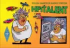 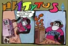 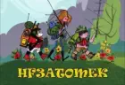 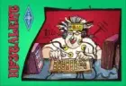
{kind=link}
{kind=link}
{kind=link}
{kind=link}
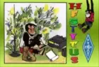 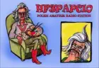 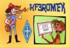 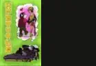
{kind=link}
{kind=link}
{kind=link}
{kind=link}
Proszę kliknac na dowolne zdjęcie- uruchomi się przeglądarka zdjęć.
Regulamin akcji dyplomowej „Tytus, Romek i A'Tomek”
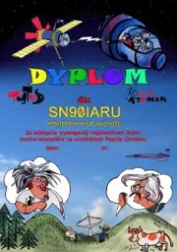{kind=link}
Cele akcji:
- Uczczenie rocznicy urodzin Henryka Jerzego Chmielewskiego, polskiego grafika,rysownika, twórcy serii komiksu pt. „Tytus, Romek i A’Tomek”, ur. 7 czerwca 1923 roku.
- Nawiązanie do wspomnień związanych z lekturą komiksu i przygód bohaterów tytułowych.
-
Rozpropagowanie pozycji przeznaczonej dla szerokiego grona czytelników.
Miejsce akcji: dostępne dla krótkofalowców pasma i emisje.
Czas akcji: 7.06.2015 do dnia 30.06.2015
Stacje organizatora akcji dyplomowej:
SQ1KSL - Weronika - HF1ROMEK
SQ1KSM - Sławek - HF1TYTUS
SQ1NXN - Adrian - HF1ATOMEK
SP1JJY - Stefan - HF1PAPCIO
SQ1SNU - Mirek - HF1TALENT
SP3GVX - Marek - HF3TYTUS
SP3WVL - Tomasz - HF3ATOMEK
SP3SBY - Józef - HF3PAPCIO
SQ3ODX - Staszek - HF3ROMEK
SQ1GPR - Adam - HF3TALENT
SO5MAX - Maciej - HF5TYTUS
SP3PJW - z Krześnicy w związku z organizacją A KIDS DAY w terminie od 18.06.2015 do
25.06.2015r. - HF0TYTUS:
Dyplom bezpłatny wydawany wyłącznie w wersji elektronicznej dostępny dla wszystkich
operatorów
stacji w formacie PDF po spełnieniu warunków:
- stacje polskie - 8 QSO/SWL
- stacje zagraniczne - 4 QSO/SWL
- stacje DX - 2 QSO/SWL
Łączności na poszczególnych pasmach można powtarzać innymi rodzajami emisji (CW, Phone,
Digi, FM).
Zgłoszenia na dyplom przyjmujemy do dnia 15.07.2015 r. Wersje
elektroniczną - wyciąg z logu ( najlepiej w formacie Cabrillo ) z podaniem znaku oraz
imienia i nazwiska, należy przesłać na
sent
to e-mail address
Zgłoszenia w tradycyjnej formie papierowej na adres:
Słubicki Klub Krótkofalowców
PZK Druciarnia SP3PJW
ul. Kopernika 71/7
69-100 Słubice
Goals of the event:
- Celebrating the birthday of Henryk Jerzy Chmielewski, Polish graphic artist and cartoonist, known as Papcio Chmiel, creator of a comic book series “Tytus, Romek, and A'Tomek”, born on the 7th of June, 1923.
- Reminding the memories related to reading the comic books and adventures of their main characters.
- Spreading the knowledge of the title targeted to general public.
Place: bands and emission modes available for radio amateurs.
Time: from 7.06.2015 to 30.06.2015.
Radio stations of the organizers of the event and diploma:
SQ1KSL - Weronika - HF1ROMEK
SQ1KSM - Sławek - HF1TYTUS
SQ1NXN - Adrian - HF1ATOMEK
SP1JJY - Stefan - HF1PAPCIO
SQ1SNU - Mirek - HF1TALENT
SP3GVX - Marek - HF3TYTUS
SP3WVL - Tomasz - HF3ATOMEK
SP3SBY - Józef - HF3PAPCIO
SQ3ODX - Staszek - HF3ROMEK
SQ1GPR - Adam - HF3TALENT
SO5MAX - Maciej - HF5TYTUS
SP3PJW will work – because of the engagement in organizing A KIDS DAY – between
18.06.2015 and 25.06.2015 as HF5TYTUS.
The diploma is free of charge and issued only in electronic version, available as a
PDF file for all operators after fulfilment of requirements:
– Polish stations: 8 QSOs / 8 listenings
– foreign stations: 4 QSOs / 4 listenings
– DXs: 2 QSOs / 2 listenings
QSOs on the same bands may be repeated on different emission modes (CW, Phone, Digi,
FM).
We are accepting applications for the diploma until 15.07.2015. Electronic version of a
log excerpt (cabrillo format recommended) with the callsign, first and last name should be
sent
to e-mail address
Traditional paper applications should be sent to:
Słubicki Klub Krótkofalowców
PZK Druciarnia SP3PJW
ul. Kopernika 71/7
69-100 Słubice
Obrazki są autorstwa Henryka Chmielewskiego, jedynie dymki zmienione.
Sławek SQ1KSM (Kwiecień 2015r.)
Kilka słów o Autorze książki "Tytus Romek i A'Tomek".
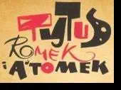
Henryk Jerzy Chmielewski, ps. Jupiter (pseudonim powstańczy), po wojnie znany głównie jako Papcio Chmiel urodził się 7 czerwca 1923 w miejscowości Warszawa. Polski grafik, rysownik i publicysta, uczestnik powstania warszawskiego - odznaczony Warszawskim Krzyżem Powstańczym, po wojnie artylerzysta w Wojsku Polskim. Jest również kawalerem Orderu Uśmiechu.
Jako grafik realizował sie na początku w wojsku, później w "Świecie Przygód", "Świecie Młodych". Najbardziej znany jako rysownik kultowego komiksu "Tytus Romek i A'Tomek" (nakład łączny 11 milionów sztuk!). Początkowo drukowany w gazecie "Świat Młodych" od 25 października 1957 roku, a w 1966 w formie książki.
Główni bohaterowie:
- Tytus de Zoo – szympans, harcerz, oblatywacz pojazdów, znaleziony w rakiecie (wersja ze „Świata Młodych”) lub narysowany przez Papcia Chmiela (wersja z Księgi I), wszędobylski, odważny, dobroduszny, pomysłowy, ale czasem złośliwy – główny bohater wszystkich komiksów. Początkowo w „Świecie Młodych” miał ogon, ale po pewnym czasie mu „zniknął”.
- Romek – wysoki, chudy, długowłosy, złośliwiec-buntownik, zarazem tchórzliwy. Wątpi w uczłowieczenie Tytusa.
- A'Tomek– harcerz zastępowy, niski, gruby, inteligentny, zarozumiały, o zdolnościach przywódczych. Jego hobby to układanie krótkich wierszyków. Głównodowodzący trójki.
- Prof. T.Alent – (czasem nazwany po prostu „Talent”) ekscentryczny naukowiec wynalazca, twórca i założyciel Instytutu Wszechzbytków, gdzie powstają fantastyczne pojazdy i inne wynalazki dla Tytusa, Romka i A'Tomka. Ma sporo myszek, na których testuje swoje eksperymenty. Często bawią się w jego włosach lub chodzą po nim.
- Papcio Chmiel – rysunkowa wersja autora komiksu, artysta malarz, przypadkowy twórca Tytusa, wychowawca i autorytet moralny Tytusa, Romka i A'Tomka. Często interweniuje w przygody bohaterów. Przykładem może być sytuacja, w której najpierw dorysował Tytusowi silniejsze mięśnie, by ten mógł wygrać zawody, następnie jednak, gdy ten został zdyskwalifikowany, narysował mu zestaw do nurkowania jako nagrodę pocieszenia.
Bibliografia/teksty zebrane z: wikipedia.pl, tytusromekiatomek.pl